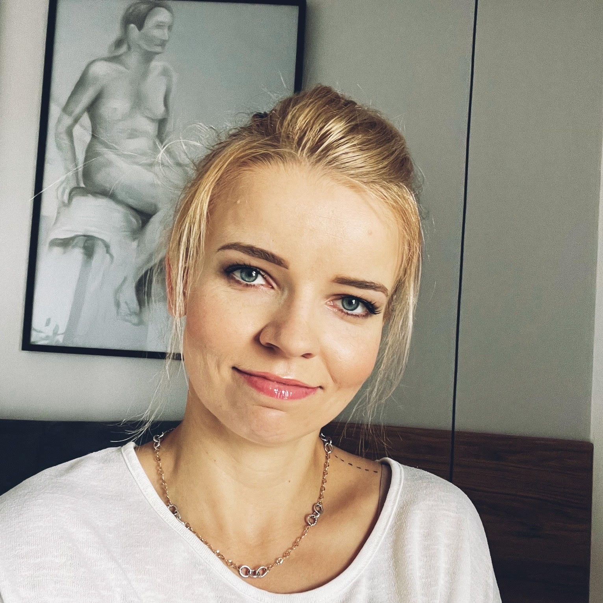

Kim jest Paula?
Fajnie, że tu jesteś. Ja jestem Paula, mam wiele pasji i talentów! Ćwiczę crossfitt, kocham auta, podróże i tatuaże. W długie jesienne wieczory lubię zmajstrować jakiś sweter na drutach.

Cytat:
Gdy komendant oblężonego zamku zaczyna układy - a kobieta słucha mężczyzny, to do poddania się niedaleko.
Walter SCOTT
Doświadczenie
Oj dużo można by pisać o moim doświadczeniu zawodowym. Każdy z zawodów jaki wykonywałam dał mi niewątpliwie masę korzyści. Ktoś kiedyś powiedział, że jesteśmy sumą naszych doświadczeń. W pełni się z tym zgodzę. W każdej pracy jaką miałam, musiałam uczyć się nowych rzeczy, odnajdywać się w nowych okolicznościach. Jednak żaden zawód nie dał mi tyle co obecny. Człowieka na moim stanowisku nie da się zwolnić i nie da się odejść z tej roboty.
Pasje
Mam bardzo wiele pasji. Na samą myśl o moim ulubionym hobby wpadam w
zamyślenie, dlatego wymienię
moje
zainteresowania w randomowej kolejności.
Niezaprzeczalnie uwielbiam sport. Jestem
typem sportowca, uwielbiam się ruszać! Ale nie zawsze tak było.
Jako dziecko słabo
biegałam. W
szkole nauczyciele kładli nacisk na byciu najlepszym w sporcie, a nie na to, aby to po prostu
polubić i robić z pasji. Wszystko zmieniło się jak skończyłam studia i poszłam do klubu
fitness/siłowni.
Lubię gotować dla mojej załogi, a w weekend zrobić pyszne ciacho.
W
wolnych chwilach zajmuję
się
dziewiarstwem. To duzo lepsze niz oglądanie telewizji, a jak uspokaja i wycisza...
Studiowałam technologię żywności, dlatego umiłowanie do jedzenia oraz wpływ żywności na zdrowie człowieka już zawsze będzie dla mnie ważne.
Kulinaria
Po co gotować?
Właśnie ten paragraf powinien być najbardziej obszerny. Gotuję (i piekę) praktycznie od dziecka. Nie wiem czy moja kuchnia jest wyjątkowa, ale najważniejsze, że mi smakuje (a moja rodzina wciąż żyje). Nie rzadko mówię, że nie lubię chodzić do restauracji. Wolę swoją, domową kuchnię. Dużo ćwiczę, więc bardzo istotne jest dla mnie co znajduje się w moim posiłku. Z racji posiadanego wykształcenia, jestem świadomowa odnośnie dodatków w żywności etc., dlatego nieczęsto jadam poza domem. Druga prawda jest taka, że mieszkam w Polsce B i u nas zwyczajnie nie ma dobrych knajp.
Inspiracje - skąd się biorą?
Na codzien przygotowuje posiłki, takie które lubimy jeść, które nie zajmują zbyt wielu czasu i są pożywne. unikam sformułowania 'zdrowe', bo żywność z założenia nie może być chora. Inspiracji szukam w internecie, ale też w starych książkach kucharskich. Celowo kupuję takowe na serwisach internetowych (np na Allegro). Najstarsza pozycja jaką posiadam ma blisko 100 lat. Uwielbiam te żółte kartki!
Organizacja
Aby ułatwić funkcjonowanie domu, przygotowuję sobie inspiracjie kulinarne na obiady. Wygląda to tak, że przeglądam moje książki, zaznaczam obiady które by nam smakowały i tworzę z nich listę. Przykład takiej listy prezentuję poniżej. Takie opracowanie ułatwia mi po prostu życie. Łatwiej robi się zakupy, zawsze wiem co ugotować, bo mam ściągę. Ostatnia kolumna w tabeli podpowiada mi składnik, który nie zawsze mam w domu i w razie "W" muszę o nim pamiętać. Podstawowe produkty spożywcze uzupełniam na bieżąco.
| Potrawa | Z jakiej książki | Strona | Kluczowy składnik |
|---|---|---|---|
| Makaron z pesto | Lubella - makarony | 19 |
|
| Polędwiczka z łososiem | Podwieczorki nie tylko słodkie | 12 |
|
| Dorsz na parze | 143 |
|
|
| Fasola po meksykańsku z mięsem | 149 |
|
W tym miejscu dodałam plik, któy możesz pobrać. W jego zawartości znajdują się przykładowe przepisy kulinarne z użyciem śliwek.
Napisz do mnie
Możesz się ze mną skontaktować na różne sposoby. Jeśli akurat nie będę programować nowej strony z YouCode to odpiszę od razu.
tel.: 500 000 000
przykladowyadres@domena.pl